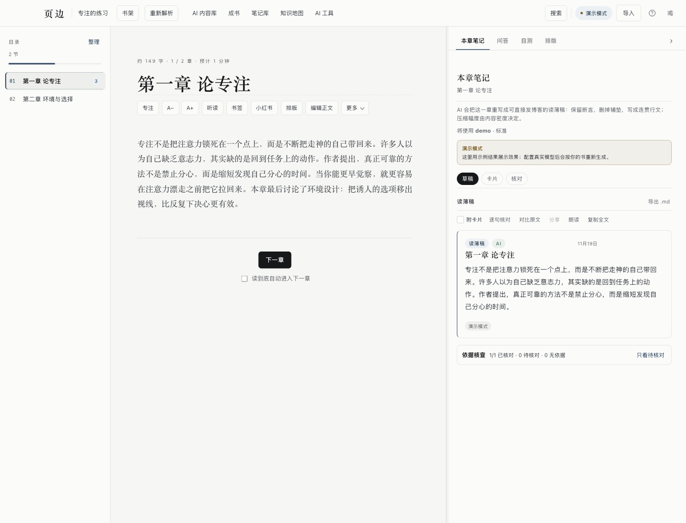
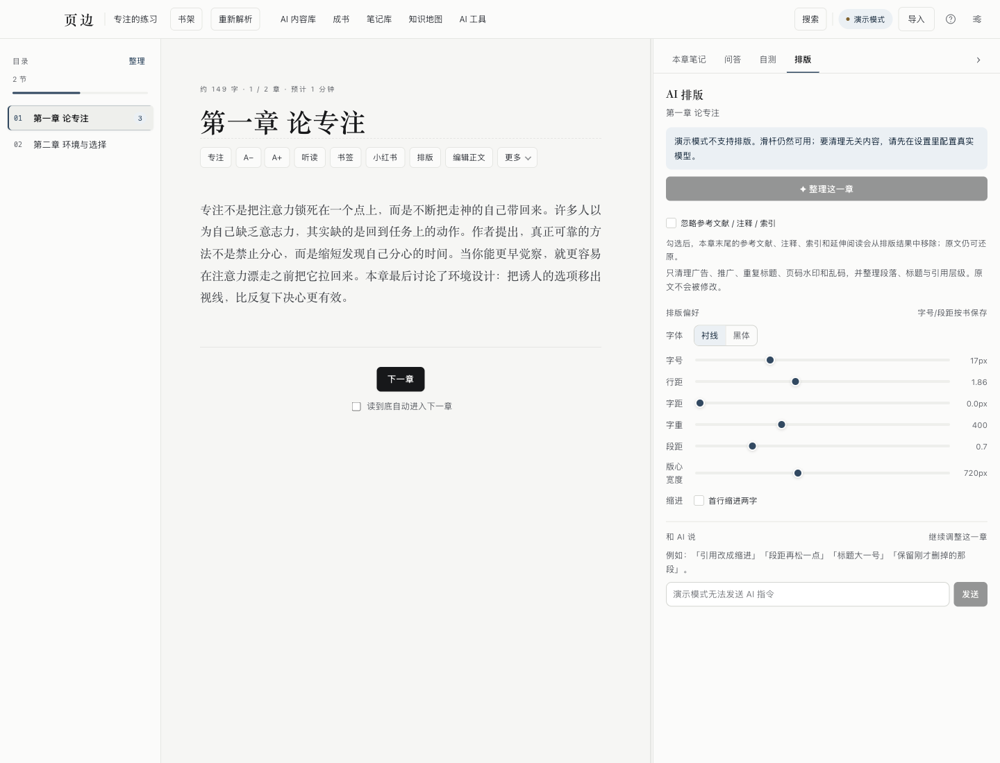
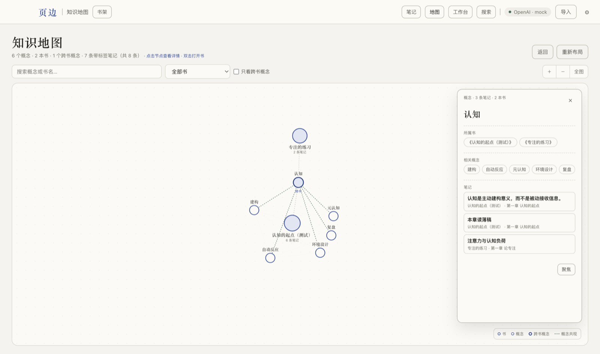
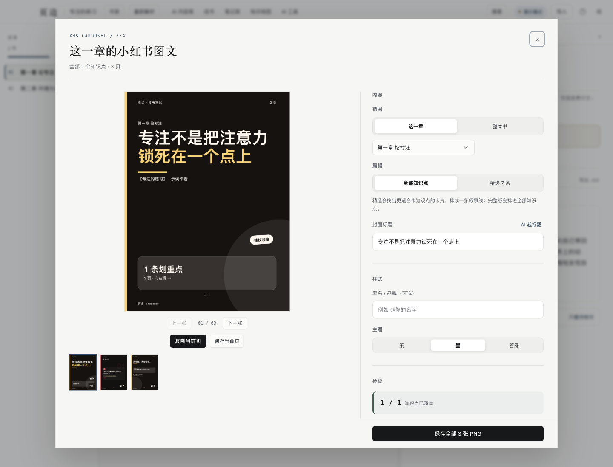

macOS · 本地优先 · MIT 开源
把一本书，读成
能发出去的稿子。
页边把每一章读薄成可编辑的底稿，从底稿提炼带原文依据的卡片，再把章节、卡片和跨书关联整理成文章、分享卡或播客。书和笔记留在本机。
v0.2.2
macOS arm64
无需账号
MIT
阅读器 · 本章笔记
真实界面

引用可以回到原文，卡片不会被模型改写冒充原句。
本地优先书、笔记、设置都在本机
引用可核对逐字匹配原文，错标待核对
一条完整产出链读薄 → 卡片 → 成书
MIT 开源无账号，无遥测
01
先把书和划线收进来
文件、网页、Readwise、Kindle 和微信读书都能进。扫描版 PDF 在本机 OCR，目录、版权页和广告页会自动隐藏。
- EPUB / PDF / MOBI / AZW3 / DOCX / HTML / Markdown / TXT
- 网页正文抓取与图片下载
- Readwise / Kindle / 微信读书划线
- macOS 扫描版 OCR，单次最多 300 页
 导入文件 / 网页 / 划线
导入文件 / 网页 / 划线
02
把阅读器调成适合长文的样子
字体、字号、行距、段距、首行缩进和版心都能改。高亮、划线、书签、专注模式与阅读计划，让注意力留在正文。
- 字体、字号、行距、段距、版心
- 高亮、划线、删除线、书签、专注模式
- PDF 原版查看、页码记忆、自动续读
- 阅读计划、连续天数与月度 / 年度统计

阅读排版 / 高亮 / 计划
03
把一章读成能继续改的底稿
按断言重写整章，保留观点与原文依据；再按篇幅提炼真正影响理解的卡片。依据逐字匹配，待核对和无依据可以直接筛出来。
- 按断言重写整章，保留原文引用
- 核心卡片：作用、引用、有限延伸
- 依据逐字匹配、待核对 / 无依据筛选
- 版本 diff、按段重写、多模型对比
读薄底稿 / 卡片 / 依据
04
让这本书和读过的书发生关系
页边回声把其他书里的相近笔记放到旁边；知识地图连接书、标签与概念；人物关系图留下小说和传记里的身份、阵营与事件。
- 页边回声：跨书语义相近的笔记对读
- 知识地图：书、标签、概念共现
- 人物关系图：身份、阵营、章节来源
- 导出 Markdown / Mermaid / PNG

连接回声 / 地图 / 关系
05
最后，把它变成能发出去的东西
章节底稿可以合成整本书，也可以变成分享卡、小红书图文或双人播客。文字、图片和音频都从同一份笔记里长出来。
- 整本成书：合并章节、补过渡、去 AI 味
- Markdown / HTML / 排版 PDF / 发布包
- 6 种分享卡、3 套主题、小红书 3:4 图文
- 千问 TTS 听读、A/B 双人播客、MP3 导出

发布成书 / 分享卡 / 播客
每个阶段能做什么
按阶段列清楚。不必每天全用上，但每一步都走得通。
看界面截图 →
导入与阅读
从文件、网页和划线记录进来，先把书读顺。
- 8 种文件格式；网页正文与图片下载
- Readwise / Kindle / 微信读书划线
- macOS 扫描版 OCR，单次最多 300 页
- PDF 原版查看、页码记忆、缩放翻页
- 字体、字号、行距、段距、版心
- 高亮、书签、专注模式、自动续读
读薄与卡片
把一章读成能继续改的稿子，再拆成少量真正有用的卡片。
- 按断言重写整章，保留观点和依据
- 核心卡片：作用、引用、有限延伸
- 依据逐字匹配、待核对 / 无依据筛选
- 卡片就地编辑、扩展、删除
- 读薄报告：字数、档位、耗时、token
- 多模型对比：重跑、快照并 diff
笔记与审计
笔记不仅留在应用里，也要能核对、能带走。
- 读薄稿、摘要、论点、知识点、想法、划线
[[标题]] 互链、反向链接、相关笔记- 按书 / 类型 / 标签 / 关键词筛选
- AI / 人工、已核对 / 待核对 / 无引用
- 行级 diff：读薄稿 / 成稿 / 报告
- 导出 Markdown + frontmatter + index.md
知识连接
书不是孤岛。概念、人物和跨书笔记都可以连起来。
- 页边回声：本地语义模型找相近笔记
- 知识地图：书、标签、概念共现
- 未归类节点：没有标签的笔记不会消失
- 人物关系图：两阶段抽取人物与事件
- 关系详情：身份、阵营、章节来源
- 导出 Markdown / Mermaid / PNG
成书与发布
把章节底稿合成为一本可以读、可以发的书。
- 合并章节、补过渡、去 AI 味
- 精炼 / 完整；三种叙述倾向
- 一键补齐未完成章节、整本重新生成
- 成稿历史最多 40 个版本，可恢复
- Markdown / HTML / 排版 PDF / 发布包
- BibTeX / RIS / APA 引用格式
分享与听读
把一条笔记变成一张图，或把一章变成一段可以听的内容。
- 6 种分享卡、3 套主题、重点句高亮
- 小红书按章 / 按书，3:4 多页图文
- 千问 TTS 逐句朗读，句子高亮
- A/B 双人对谈、英文音色、睡眠定时
- 断点续听、迷你播放器、整章 MP3
- 覆盖检查：正文 → 卡片漏点
AI 工作台
19 个研究、深读、练习和整理工具，共用同一份书与笔记。
- 全库研究、作者圆桌、魔鬼代言人
- 多角色读书会、跨书综述、阅读路径
- 每周复盘、年度报告、论证地图
- 全章批注、观点演变、知识缺口
- 事实核查、扫描页 / 图表理解
- 双人播客、自适应出题、合并与去重
同步与备份
换一台电脑，书和笔记仍然跟着你。
- 整库导出 / 导入 zip，换机可迁移
- 每日自动备份，保留 8 份
- WebDAV 快照，可选加密与合并
- 文件夹同步：iCloud / Dropbox / NAS
- 恢复前自动安全备份
- 书文件按内容哈希去重
数据与边界
书和笔记先属于你，再谈 AI 和分享。
- 书、笔记、生成内容在本机 SQLite + 文件
- API Key 使用系统钥匙串加密
- 可选应用锁；数据库加密仍在评估
- 诊断包只含版本 / 系统 / 脱敏设置 / 日志
- 使用在线模型时只发送必要正文
- 语义向量在本机计算，笔记不出网
能力页边 ThinRead常见工具
一本书的产出读薄稿、卡片、成书、分享图高亮、摘要或零散笔记
跨书能力语义回声 + 知识地图 + 人物关系图标签、双链或当前资料集
导入与 OCR8 种文件格式 + 网页 / Readwise / 微信读书 + macOS OCR通常只支持 EPUB / PDF
笔记可信度引用核对 + 审计 + 版本 diff很少核对引用和覆盖度
数据位置本机 SQLite + 文件多数是云端服务
适合的读法深读非虚构，并继续写作收集、回顾或通用知识库
“不替你读书，只把读完之后的痕迹整理好。”
页边 · 产品原则
路线图根据开发记录和已知限制整理；已完成项写落地时间，未完成项只标当前阶段，不写虚构排期，也不代表承诺交付。
v0.1.0第一个 macOS 版本
阅读器、章节回收站、笔记依据核查、搜索索引、BibTeX / RIS / APA 引用和未签名发布流程。
v0.1.1第一次引导与成本确认
首次引导、圆角图标、内嵌手册，以及模型调用前的费用与请求数确认。
v0.1.2文章复制全文
章节、读薄稿、成书、报告和周复盘都可以一键复制全文。
STEPS 01–19可信度与听读 2.0
统计持久化、笔记审计、版本 diff、Markdown 导出、阅读小结、千问 TTS、音色库、MP3 导出和段落间隔。
v0.1.4阅读计划与分享重构
阅读计划、应用锁、内容回收站、分享卡 / 小红书重构、重点句高亮，以及知识地图里的「未归类」。
WEBSITE官网上线
项目介绍、下载、公开路线图、迭代时间线、点赞和本机留言。
v0.1.5版本刷新
重新打包 macOS DMG；应用功能与 v0.1.4 一致，官网同步浅色 / 深色模式和留言服务。
v0.2.0PDF 深度解析与正文编辑
接入 Docling 深度解析，恢复代码换行与缩进；支持手动编辑正文、图片理解、代码检查 / 修复 / 理解，并自动选择可用的视觉模型。
v0.2.1同步、批注与英文 Beta
加入加密同步快照、PDF 原页批注、书架状态、AI 预算守卫、系统 TTS 和英文 Beta，接入 OpenDesign Cloud，并重做分享卡；仓库以 MIT 协议公开，官网与手册同步翻新。
v0.2.2可靠性与速度
设置文件原子写入与损坏备份、WebDAV 配置持久化修复；视觉 PDF 超过 120 页自动分批；启动维护移出首屏、读薄并发提升、阅读进度不再触发整章重渲染；数据库拆分为领域模块。
v0.3同步、Windows 与更完整的英文
加密同步、数据库加密、跨平台 OCR、少量主进程错误与导出模板的英文覆盖，以及任务级取消；这些是方向，不是承诺日期。
点赞
—
一个浏览器只记一次；计数由 Abacus 提供，不收集个人信息。
当前版本
v0.2.2最新发布
macOSarm64
MIT开源协议
未签名构建；书、笔记和设置都保存在本机。
下载
把下一本书
读成自己的。
macOS arm64 · MIT 开源 · 未签名构建。书和笔记保存在本机；Windows 在评估中。
首次打开若提示「无法验证开发者」，在 Finder 里右键应用 → 打开，或到「系统设置 → 隐私与安全性」允许本次打开。